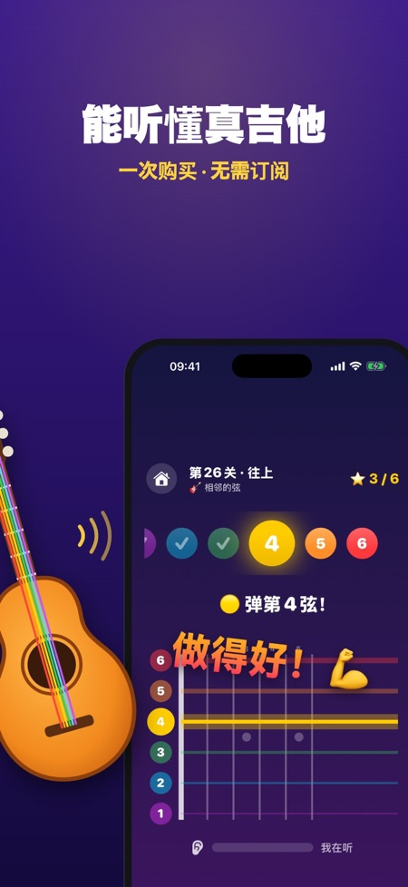
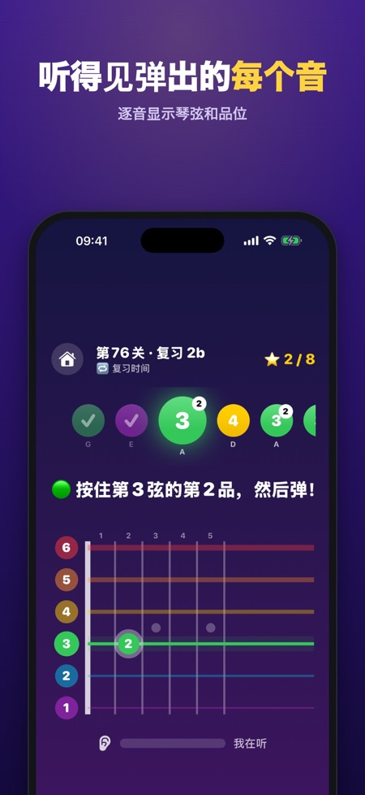
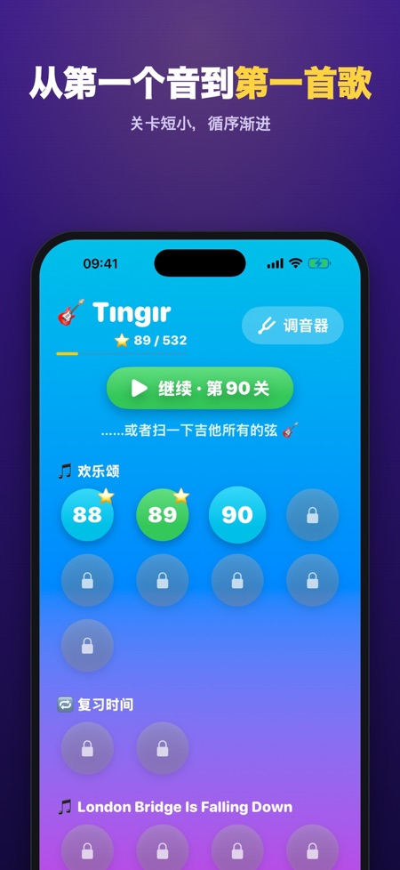

课程、歌曲和调音器. 拿起一把真吉他，让 Tıngır 来听！ 每弹对一个音都有掌声，每过一关都有彩纸。 从第一个音到第一首歌，500 多个关卡。 无广告、无订阅、不收集任何数据。 .



Tıngır 是一款让孩子用真吉他边玩边学的游戏。 不用点屏幕：吉他就是手柄。 把 iPad 或 iPhone 放在面前，拨一根弦，Tıngır 会通过麦克风聆听，并识别你弹的是哪根弦、哪个音。
从最简单的开始
• 先弹空弦：一根一根、两次、相邻的弦
• 再学按品的音，一个一个来
• 然后是歌曲：分段弹、整首弹，最后凭记忆弹
532 关，34 首歌
生日快乐、欢乐颂、铃儿响叮当、货郎、致爱丽丝等等——还能在粗弦上和其他调上弹。
每一步都有掌声
每个对的音都有"超棒！ "，每关结束都有星星、彩纸和号角。 弹错没有惩罚——只有"再试一次！ "
不碰屏幕也能玩
一关结束后，扫一下所有的弦就能进入下一关。
内置调音器 · 40 种语言
隐私
无需账号，没有广告，不收集任何数据。 麦克风只在设备上用于识别音符；不会录音，也不会发送任何内容。
适用于民谣吉他、电吉他和古典吉他。
每一关怎么玩
1. Tıngır 用彩色琴弦和大号数字显示要弹哪根弦、按哪个品。
2. 孩子在真吉他上弹出这个音。
3. Tıngır 听到后鼓掌，然后进入下一个音。 不认识乐谱也没关系。
写给家长
• 每一关都很短，方便每天练习
• 进度保存在本设备上，无需注册账号
• 离线可用，弹奏时不需要联网
• 适合作为上吉他课之前的第一步，也适合配合课程在家练习
• 颜色和数字会给出指引，不懂乐谱和乐理也能开始
• 弹错不扣分，在一次次表扬中慢慢进步
常见问题
可以用什么吉他？
民谣吉他、古典吉他和电吉他都可以，儿童尺寸的小吉他也没问题。
在吵闹的房间里能用吗？
在安静的房间里，把设备放在吉他附近，识别效果最好。
吉他音不准怎么办？
先用内置调音器把吉他调准，这样每个音都能被正确识别。
几岁可以开始？
只要能拨动琴弦就可以开始。 年纪小的孩子建议在家长陪伴下从空弦关卡开始。
需要会弹吉他吗？
完全不需要。 Tıngır 从最简单的空弦开始，一步一步带孩子弹到第一首完整的歌。
一次要练多久？
每天几分钟就够了。 关卡很短，孩子可以随时停下，下次接着往下学。
需要一直点屏幕吗？
不需要。 关卡结束后，扫一下所有琴弦就能进入下一关。
会录音吗？
不会。 麦克风只在设备上用来识别音符，不会录音，也不会发送任何内容。
弹错了会怎样？
没关系，不扣分，只会听到鼓励，再弹一次就好。
可以在 iPhone 上用吗？
可以，iPad 和 iPhone 都能用。 把设备立在面前，让麦克风朝向吉他。
支持哪些语言？
共 40 种语言，包括简体中文和繁体中文。
适合谁
• 想让孩子接触音乐、又不想一开始就啃乐谱的家庭
• 家里有吉他，但不知道从哪里教起的家长
• 已经在上吉他课、需要在家多练习的孩子
• 喜欢闯关和收集星星的孩子
一次性购买即可解锁全部 532 关和 34 首歌曲。 无订阅。 购买页面需通过家长验证。